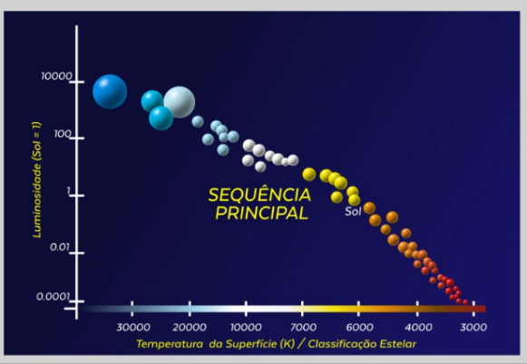

FUNDAMENTOS
O Diagrama Hertzsprung-Russell (HR) é uma das ferramentas
mais fundamentais em astrofísica, utilizado para descrever
e entender a evolução estelar. Desenvolvido independentemente
por Ejnar Hertzsprung e Henry Norris Russell no início do
século XX, o diagrama relaciona a luminosidade das estrelas
com suas temperaturas superficiais, proporcionando uma
visualização clara da sequência principal, onde a maioria
das estrelas se encontra durante a maior parte de suas vidas.
Este diagrama é crucial para classificar as estrelas e
entender suas características físicas, como massa e idade
(Hertzsprung, 1911; Russell, 1913).
Como afirmado por Smith et al. (2024, p.152):
O Diagrama Hertzsprung-Russell (HR) é um gráfico fundamental
na astrofísica que relaciona a luminosidade de uma estrela
com sua temperatura superficial. Desenvolvido inicialmente
por Ejnar Hertzsprung e Henry Norris Russell no início do
século XX, o diagrama permite a visualização das estrelas
em um contexto que revela não apenas suas características
individuais, mas também padrões de evolução estelar. No eixo
horizontal do diagrama, temos a temperatura efetiva da estrela,
geralmente expressa em escala de Kelvin, que decresce da
esquerda para a direita. O eixo vertical representa a
luminosidade da estrela, em relação ao Sol, com uma escala
logarítmica. Esta configuração possibilita a identificação
de diferentes tipos estelares e suas posições relativas,
desde as estrelas anãs quentes e luminosas, até as gigantes
frias e menos luminosas. A utilização do Diagrama HR tem sido
crucial para o desenvolvimento de modelos teóricos sobre
a evolução das estrelas, permitindo a integração de observações
empíricas com simulações teóricas, e proporcionando uma
compreensão mais profunda das fases de vida estelar e das
estruturas galácticas.

O eixo horizontal do Diagrama HR representa a temperatura
efetiva das estrelas, geralmente medida em Kelvin. Esta escala
é invertida, com temperaturas mais altas à esquerda e mais
baixas à direita. Esta escolha reflete a natureza física das
estrelas, onde as mais quentes tendem a ser mais luminosas e,
portanto, aparecem à esquerda no diagrama. Essa relação
entre temperatura e luminosidade é um dos aspectos centrais
para compreender a vida das estrelas e sua evolução ao longo
do tempo (Hertzsprung, 1911).
No eixo vertical, a luminosidade é expressa em termos de
luminosidade solar, ou seja, em unidades de brilho comparadas
ao do Sol. As estrelas na parte superior do diagrama são
extremamente luminosas, enquanto aquelas na parte inferior são
muito menos brilhantes. A posição de uma estrela no diagrama,
portanto, indica sua luminosidade relativa e fornece pistas sobre
sua massa, idade e estado evolutivo. Este aspecto do diagrama
HR é essencial para a astrofísica, pois permite a análise da
distribuição de estrelas em diferentes estágios de suas vidas
(Russell, 1913).
SEQUENCIA PRINCIPAL
O Diagrama HR também revela a sequência principal, uma faixa
diagonal que vai da parte superior esquerda à parte inferior
direita do diagrama. Estrelas na sequência principal estão em
equilíbrio hidrostático, fundindo hidrogênio em hélio em seus
núcleos. Este é o estágio mais longo na vida de uma estrela,
e a posição de uma estrela na sequência principal depende de
sua massa, com estrelas mais massivas sendo mais quentes e
luminosas (Hertzsprung, 1911; Russell, 1913).
Além da sequência principal, o Diagrama HR destaca outras regiões significativas, como a área das gigantes vermelhas e dos anãs brancas. As gigantes vermelhas, localizadas no canto superior direito, são estrelas que esgotaram o hidrogênio em seus núcleos e começaram a fundir elementos mais pesados, resultando em um aumento de tamanho e brilho. Já as anãs brancas, situadas no canto inferior esquerdo, representam o estágio final da vida de uma estrela de baixa massa, onde a fusão nuclear cessou e a estrela esfria lentamente ao longo do tempo (Russell, 1913).
